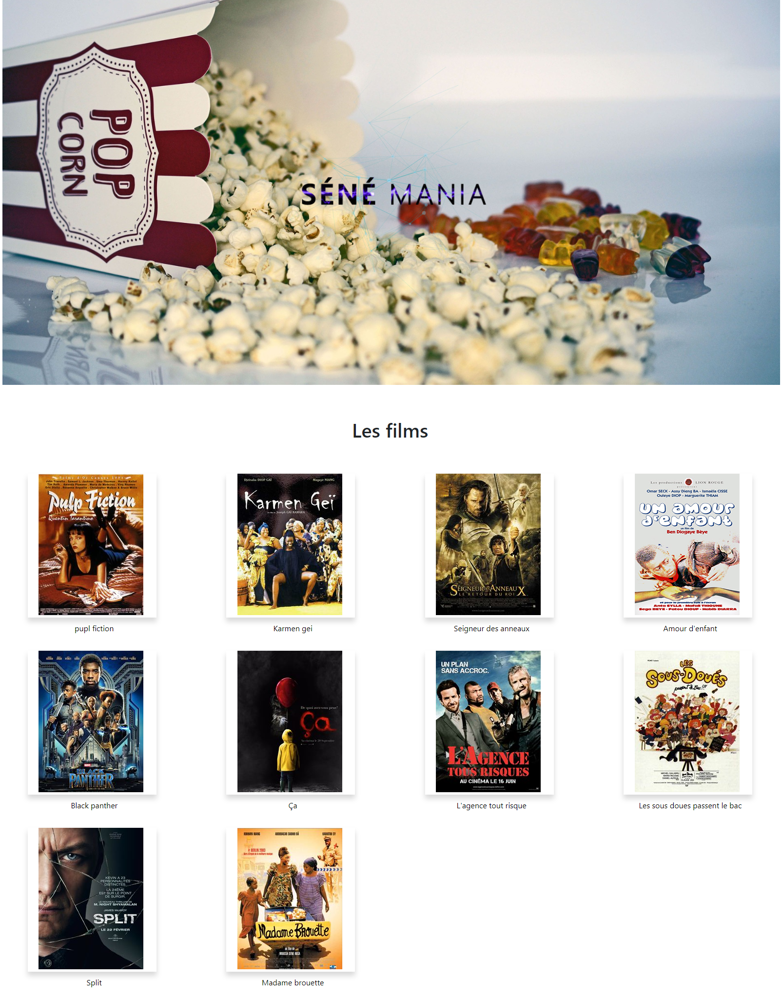

<!--
  Generated template for the AnnuairePage page.

  See http://ionicframework.com/docs/components/#navigation for more info on
  Ionic pages and navigation.
-->
<ion-header>
    
  
  <ion-navbar>
    <ion-title >Projet annuaire</ion-title>
  </ion-navbar>
</ion-header>
<ion-content>

  <ion-card>
      <ion-card-content>
          <ion-card-title >
          
            <h1 class="t1" text-center> Annuaire de film</h1>
          </ion-card-title> 
           <h1 text-center>Resume</h1>
          <p class="p1" text-center>
            <br>
           Ce projet consister a mettre en place un annuaire de film
          </p>
        </ion-card-content>
    
        <ion-item>
          <ion-icon name='ionitron' item-start style="color: #55acee"></ion-icon>
          Technologie utilisée
          <ion-badge item-end>HTML,CSS,PHP,TWIG,MYSQL</ion-badge>
        </ion-item>
    
        <ion-item>
          <ion-icon name='people' item-start style="color: #55acee"></ion-icon>
          Colloborateur
          <ion-badge item-end>4</ion-badge>
        </ion-item>
    
    

    
  </ion-card>

</ion-content>